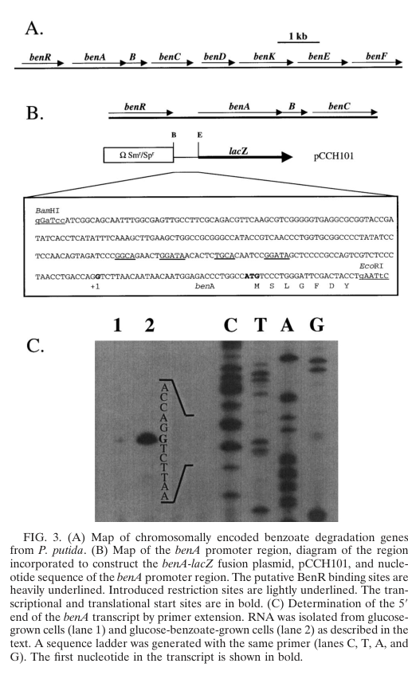

benB encodes the beta subunit of the BenABC benzoate 1,2-dioxygenase system in Pseudomonas putida KT2440. Together with the BenA oxygenase alpha subunit and BenC electron-transfer component, BenB contributes to the first hydroxylating step of the chromosomal benzoate branch that feeds catechol and the beta-ketoadipate pathway.
| GO Term | Evidence | Action | Reason |
|---|---|---|---|
|
GO:0018623
benzoate 1,2-dioxygenase activity
|
IEA
GO_REF:0000003 |
ACCEPT |
Summary: BenB is the beta subunit of the multicomponent BenABC benzoate 1,2-dioxygenase, so the enzyme activity is correct only as a contributes_to annotation.
Reason: The beta subunit supports the BenABC oxygenase system but is not the complete dioxygenase by itself; the contributes_to qualifier captures that complex-level activity.
Supporting Evidence:
file:PSEPK/benB/benB-uniprot.txt
SubName: Full=Benzoate 1,2-dioxygenase subunit beta
PMID:11053377
The benABC genes likely encode benzoate dioxygenase
file:PSEPK/benB/benB-deep-research-falcon.md
**BenB** encodes the **small (beta) subunit** of the **benzoate 1,2-dioxygenase oxygenase component**. In KT2440, benzoate 1,2-dioxygenase is encoded by **benA-benB-benC** (BenA/BenB oxygenase + BenC reductase) and functions upstream of **benD**, which converts the dioxygenase product to catechol.
file:PSEPK/benB/benB-deep-research-falcon.md
**BenABC** converts **benzoate** into a **cis-benzoate dihydrodiol (“benzoate diol”)**, after which
|
|
GO:0019380
3-phenylpropionate catabolic process
|
IEA
GO_REF:0000118 |
REMOVE |
Summary: The TreeGrafter 3-phenylpropionate process annotation is not the best pathway assignment for BenB in KT2440.
Reason: BenB belongs to the benABCD benzoate catabolic branch, while the available KT2440 pathway literature maps ben genes to benzoate catabolism rather than 3-phenylpropionate catabolism.
Proposed replacements:
benzoate catabolic process via hydroxylation
Supporting Evidence:
PMID:12534466
genes encoding the peripheral pathways for the catabolism of p-hydroxybenzoate (pob), benzoate (ben)
PMID:11053377
The benABC genes likely encode benzoate dioxygenase
file:PSEPK/benB/benB-deep-research-falcon.md
Jiménez et al. describe **benABCD** as a **peripheral pathway** that transforms benzoate to **catechol**, which then feeds into the **β-ketoadipate** central pathway via catechol-processing genes (often referred to as the catechol/ortho-cleavage branch).
|
|
GO:0043640
benzoate catabolic process via hydroxylation
|
IC
PMID:12534466 Genomic analysis of the aromatic catabolic pathways from Pse... |
NEW |
Summary: BenB contributes to BenABC, the hydroxylating dioxygenase system that initiates benzoate catabolism.
Reason: The pathway literature maps ben genes to benzoate catabolism, and BenB is the beta subunit of the BenABC dioxygenase inferred to catalyze the first hydroxylation step.
Supporting Evidence:
PMID:12534466
genes encoding the peripheral pathways for the catabolism of p-hydroxybenzoate (pob), benzoate (ben)
PMID:11053377
The benABC genes likely encode benzoate dioxygenase
file:PSEPK/benB/benB-deep-research-falcon.md
**BenABC** converts **benzoate** into a **cis-benzoate dihydrodiol (“benzoate diol”)**, after which
file:PSEPK/benB/benB-deep-research-falcon.md
Jiménez et al. describe **benABCD** as a **peripheral pathway** that transforms benzoate to **catechol**, which then feeds into the **β-ketoadipate** central pathway via catechol-processing genes (often referred to as the catechol/ortho-cleavage branch).
|
Q: Does BenB alter substrate range or stability of the KT2440 BenAB oxygenase relative to other benzoate/toluate dioxygenase beta subunits?
Suggested experts: Pseudomonas aromatic catabolism experts
Experiment: Purify or reconstitute BenABC variants lacking BenB or carrying BenB substitutions, then compare benzoate cis-diol formation and substrate range.
Type: enzyme reconstitution assay
The research report should be a detailed narrative explaining the function, biological processes, and localization of the gene product. Citations should be given for all claims.
You should prioritize authoritative reviews and primary scientific literature when conducting research. You can supplement
this with annotations you find in gene/protein databases, but these can be outdated or inaccurate.
We are specifically interested in the primary function of the gene - for enzymes, what reaction is catalyzed, and what is the substrate specificity? For transporters, what is the substrate? For structural proteins or adapters, what is the broader structural role? For signaling molecules, what is the role in the pathway.
We are interested in where in or outside the cell the gene product carries out its function.
We are also interested in the signaling or biochemical pathways in which the gene functions. We are less interested in broad pleiotropic effects, except where these elucidate the precise role.
Include evidence where possible. We are interested in both experimental evidence as well as inference from structure, evolution, or bioinformatic analysis. Precise studies should be prioritized over high-throughput, where available.
The symbol benB is used across many bacteria for benzoate-catabolism genes; here, the correct target is UniProt Q88I39 from Pseudomonas putida strain KT2440 (ordered locus PP_3162), annotated as benzoate 1,2-dioxygenase subunit beta (small/beta subunit of the terminal oxygenase). KT2440 genome analysis places benB in the canonical ben cluster with benA (alpha/large oxygenase subunit) and benC (reductase) and the downstream benD dehydrogenase, matching the UniProt description and ring-hydroxylating dioxygenase family placement. (jimenez2002genomicanalysisof pages 5-6, cowles2000benraxyls pages 5-6)
BenB encodes the small (beta) subunit of the benzoate 1,2-dioxygenase oxygenase component. In KT2440, benzoate 1,2-dioxygenase is encoded by benA-benB-benC (BenA/BenB oxygenase + BenC reductase) and functions upstream of benD, which converts the dioxygenase product to catechol. (jimenez2002genomicanalysisof pages 5-6, cowles2000benraxyls pages 4-5)
Benzoate 1,2-dioxygenase belongs to the Rieske nonheme iron ring-hydroxylating dioxygenase family. These enzymes introduce both atoms of molecular oxygen into an aromatic ring, producing a cis-dihydrodiol. Sequence/biochemical analysis of benzoate dioxygenase systems indicates:
- A two-subunit hydroxylase (alpha + beta; BenA + BenB) and
- An electron transfer component (BenC), which provides reducing equivalents from NADH. (neidle1991nucleotidesequencesof pages 1-2, jeffrey1992characterizationofpseudomonas pages 1-2)
In this family, the alpha subunit houses conserved motifs associated with a Rieske-type [2Fe–2S] center and a mononuclear Fe(II) site (the catalytic iron), while the beta subunit is less conserved and has been proposed to influence substrate specificity. (neidle1991nucleotidesequencesof pages 1-2)
In the benzoate-to-catechol peripheral pathway, the dioxygenase complex BenABC performs the first step:
- BenABC converts benzoate into a cis-benzoate dihydrodiol (“benzoate diol”), after which
- BenD (cis-dihydrodiol dehydrogenase) converts that dihydrodiol intermediate into catechol. (jimenez2002genomicanalysisof pages 5-6, zhan2008genesinvolvedin pages 4-5)
This is consistent with KT2440 pathway descriptions that benzoate is catabolized to catechol through a pathway that includes benzoate dioxygenase BenABC. (dumalo2020dioxygenasesinthe pages 23-27)
Primary literature on benzoate 1,2-dioxygenase systems supports the following architecture:
- Hydroxylase component: BenA (alpha) + BenB (beta).
- Electron-transfer component: BenC, often described as a single-polypeptide reductase-like component with ferredoxin-like and oxidoreductase-like regions and motifs for NAD/FAD binding. (neidle1991nucleotidesequencesof pages 1-2, rekik1991…oftheacinetobacter pages 2-3)
Mechanistically, electron delivery proceeds via an electron transfer chain characteristic of Rieske dioxygenases. Biochemical characterization of benzoate dioxygenase systems reports an electron flow scheme consistent with:
NADH → reductase FAD → reductase [2Fe–2S] → oxygenase Rieske [2Fe–2S] → mononuclear Fe (catalytic site). (beharry2002characterizationofanthranilate pages 99-106)
Detailed biochemical work on benzoate dioxygenase indicates tightly coupled catalysis for optimal substrates, including a reported stoichiometry approximating NADH:O2:benzoate:cis-dihydrodiol = 1:1:1:1, supporting a fully coupled dioxygenation reaction for benzoate. (beharry2002characterizationofanthranilate pages 65-72)
Direct KT2440 BenB-specific in vitro substrate-range data were not retrieved in the available full texts. Therefore, claims about specific alternative substrates for KT2440 BenB must be treated cautiously.
However, authoritative comparative work on benzoate dioxygenase family members indicates:
- Chromosomal benzoate dioxygenase systems can be relatively narrow in specificity (favoring unsubstituted benzoate), whereas related plasmid-borne homologs (e.g., xyl systems) can accept methyl-substituted substrates more readily. (neidle1991nucleotidesequencesof pages 2-3)
- The beta subunit is less conserved and has been proposed to contribute to substrate specificity among multicomponent oxygenases, consistent with the idea that BenB helps tune the binding pocket/trajectory for aromatic acids. (neidle1991nucleotidesequencesof pages 1-2)
Thus, for KT2440 BenB (Q88I39), the most strongly supported conclusion is that it functions as the beta subunit of the benzoate 1,2-dioxygenase oxygenase and participates in determining substrate recognition within the family, but the exact KT2440 substrate range beyond benzoate is not resolved by the retrieved evidence. (cowles2000benraxyls pages 5-6, neidle1991nucleotidesequencesof pages 1-2)
KT2440 genome analysis identifies a ben cluster containing benA, benB, benC, benD and associated uptake/regulatory genes, consistent with a dedicated module for converting benzoate into catechol. (jimenez2002genomicanalysisof pages 5-6, jimenez2002genomicanalysisof pages 6-9)
A gene-cluster diagram from P. putida shows the chromosomal arrangement benR-benABCD-benK-benE-benF, illustrating that benzoate catabolism genes are co-localized with regulatory and transport-associated genes. (cowles2000benraxyls media 3d8749df)
Jiménez et al. describe benABCD as a peripheral pathway that transforms benzoate to catechol, which then feeds into the β-ketoadipate central pathway via catechol-processing genes (often referred to as the catechol/ortho-cleavage branch). (jimenez2002genomicanalysisof pages 6-9)
In P. putida, BenR (a XylS-family regulator) is required for activation of benzoate-catabolic genes. Cowles et al. report that benA, benB, and benC are cotranscribed and are predicted to encode benzoate 1,2-dioxygenase, and that BenR activates benABC in response to benzoate. (cowles2000benraxyls pages 4-5)
The same study provides strong reporter evidence for BenR-dependent transcriptional activation (including approximately 13,000 Miller units in a BenR-driven promoter reporter context under the conditions tested), supporting BenR as a potent activator in the benzoate response network. (cowles2000benraxyls pages 4-5)
Cowles et al. further connect benzoate sensing to regulation of other aromatic-acid uptake/catabolism modules: BenR mediates benzoate-linked repression of pcaK (a transporter in the 4-hydroxybenzoate/protocatechuate β-ketoadipate branch), illustrating cross-pathway regulatory coupling so that benzoate availability reshapes aromatic carbon flux. (cowles2000benraxyls pages 5-6)
No direct subcellular localization experiments (e.g., fractionation, microscopy) for KT2440 BenB were retrieved in the available sources. The strongest evidence-based interpretation is therefore indirect:
- benB encodes a soluble oxygenase subunit within a cytosolic aromatic catabolic pathway, and is adjacent to transport functions (BenK/BenE/BenF) that would deliver benzoate intracellularly. (jimenez2002genomicanalysisof pages 5-6, cowles2000benraxyls media 3d8749df)
Accordingly, BenB is best annotated as part of a cytosolic multicomponent oxygenase complex acting after substrate uptake; this is consistent with the biology of ring-hydroxylating dioxygenases, but should be treated as family-based inference rather than directly demonstrated localization for Q88I39. (jimenez2002genomicanalysisof pages 5-6, cowles2000benraxyls pages 4-5)
Recent work in 2023–2024 emphasizes the value of P. putida KT2440 as a chassis for aromatic bioconversion leveraging the β-ketoadipate network into which benzoate/catechol modules feed.
A 2023 Science Advances study engineered P. putida KT2440 for funneling mixed lignin-related aromatics to β-ketoadipic acid, achieving:
- 44.5 g/L β-ketoadipate (model lignin-related aromatics) and 25 g/L (corn stover-derived lignin-related stream),
- Productivities of 1.15 and 0.66 g·L−1·h−1, respectively, and
- Overall yield of 0.10 g product per g lignin from corn stover-derived lignin. (werner2023ligninconversionto pages 1-2)
Although this work does not single out benB, it highlights that robust aromatic funneling in KT2440 relies on the organism’s modular upper pathways (including benzoate/catechol entry points) and the central β-ketoadipate pathway as a production platform. (werner2023ligninconversionto pages 1-2)
A 2024 review (Chemical Communications) surveys lignin valorization strategies and includes an engineered KT2440 example for 2,4-pyridinedicarboxylic acid (2,4-PDCA) production from lignin streams, reporting up to 0.24 mM (0.04 g/L) in 20 h from 1.5% GVPL in resting-cell conditions. (sodre2024sustainableproductionof pages 9-10)
This consolidates expert consensus that KT2440’s aromatic pathways are actively being repurposed for industrially relevant conversions, and that controlling aromatic uptake and ring-cleavage flux is a key design axis. (sodre2024sustainableproductionof pages 9-10)
The following table provides a consolidated mapping of claims to sources.
| Topic | Key points | Evidence type | Primary citations | Context IDs |
|---|---|---|---|---|
| Identity | benB / PP_3162 / UniProt Q88I39 in Pseudomonas putida KT2440 is annotated as the small (beta) subunit of benzoate 1,2-dioxygenase; KT2440 genome analysis places benB in the ben cluster with benA (large/alpha oxygenase subunit), benC (reductase), and benD (cis-dihydrodiol dehydrogenase). This matches the UniProt assignment and ring-hydroxylating dioxygenase family placement. | Genomic annotation; comparative gene-cluster analysis | Jiménez et al. 2002, Environmental Microbiology (Dec 2002), DOI: https://doi.org/10.1046/j.1462-2920.2002.00370.x; Cowles et al. 2000, Journal of Bacteriology (Nov 2000), DOI: https://doi.org/10.1128/jb.182.22.6339-6346.2000 | (jimenez2002genomicanalysisof pages 5-6, cowles2000benraxyls pages 5-6) |
| Complex composition | The benzoate dioxygenase system in KT2440 is a multicomponent enzyme: BenA + BenB form the oxygenase component and BenC is the reductase component; BenD acts immediately downstream on the cis-dihydrodiol product. This organization is typical of bacterial ring-hydroxylating dioxygenases. | Genomic annotation; operon/genetics | Jiménez et al. 2002, DOI: https://doi.org/10.1046/j.1462-2920.2002.00370.x; Cowles et al. 2000, DOI: https://doi.org/10.1128/jb.182.22.6339-6346.2000 | (jimenez2002genomicanalysisof pages 5-6, cowles2000benraxyls pages 4-5, cowles2000benraxyls pages 5-6) |
| Reaction / product | BenABC catalyzes the initial dioxygenation of benzoate to a cis-benzoate dihydrodiol (benzoate diol); BenD then converts that intermediate to catechol. For KT2440 specifically, literature states that benzoate is converted to catechol through a pathway including BenABC. | Pathway assignment from genome/genetics; review synthesis | Jiménez et al. 2002, DOI: https://doi.org/10.1046/j.1462-2920.2002.00370.x; Dumalo 2020, DOI: https://doi.org/10.14288/1.0394310; Zhan et al. 2008, DOI: https://doi.org/10.1007/s00284-008-9251-4 | (jimenez2002genomicanalysisof pages 5-6, dumalo2020dioxygenasesinthe pages 23-27, zhan2008genesinvolvedin pages 4-5) |
| Pathway role | benABCD comprises the peripheral benzoate catabolic pathway that funnels benzoate into the catechol branch of the β-ketoadipate pathway. In KT2440, benzoate degradation therefore connects upper-pathway aromatic oxidation to central aromatic assimilation via catechol/ortho cleavage genes (cat). | Genome-scale pathway reconstruction; review | Jiménez et al. 2002, DOI: https://doi.org/10.1046/j.1462-2920.2002.00370.x; Dumalo 2020, DOI: https://doi.org/10.14288/1.0394310 | (jimenez2002genomicanalysisof pages 6-9, dumalo2020dioxygenasesinthe pages 23-27) |
| Regulation | BenR (XylS/AraC-family regulator) activates benABC in response to benzoate. Cowles et al. reported strong BenR-dependent promoter activation, including about 13,000 Miller units in a reporter assay for BenR-driven activation of a Pm::lacZ reporter under the tested conditions. BenR also mediates benzoate-linked repression of pcaK, coupling benzoate utilization to broader aromatic-acid pathway control. | Genetics; reporter assays; complementation | Cowles et al. 2000, DOI: https://doi.org/10.1128/jb.182.22.6339-6346.2000 | (cowles2000benraxyls pages 4-5, cowles2000benraxyls pages 6-7, cowles2000benraxyls pages 5-6) |
| Transport / cluster context | The chromosomal ben cluster in P. putida includes benR-benABCD-benK-benE-benF; nearby genes support uptake and outer-membrane entry of benzoate. BenK is assigned as a benzoate transporter, while BenE/BenF are associated with uptake/porin functions in the cluster context. | Gene-cluster diagram; comparative genomics; physiology | Cowles et al. 2000, DOI: https://doi.org/10.1128/jb.182.22.6339-6346.2000; Jiménez et al. 2002, DOI: https://doi.org/10.1046/j.1462-2920.2002.00370.x | (cowles2000benraxyls media 3d8749df, cowles2000benraxyls media aec21498, jimenez2002genomicanalysisof pages 5-6) |
| Substrate scope / inference | Direct KT2440 benB biochemical specificity data were not retrieved in the available contexts; however, homology discussed by Cowles et al. links BenB to other ring-hydroxylating dioxygenase beta subunits (including toluate-dioxygenase-related proteins), supporting inference that BenB contributes to the canonical benzoate oxygenase complex and may share determinants common to related aromatic-acid dioxygenases. This remains inference, not direct KT2440 enzyme kinetics. | Comparative homology; cautious functional inference | Cowles et al. 2000, DOI: https://doi.org/10.1128/jb.182.22.6339-6346.2000 | (cowles2000benraxyls pages 5-6) |
| Cellular localization | No direct localization experiment for KT2440 BenB was retrieved in the available contexts. Given its role as the small subunit of a multicomponent ring-hydroxylating dioxygenase, the strongest evidence supports a cytosolic enzyme complex acting on intracellular benzoate after uptake; this should be treated as family-based inference rather than direct localization proof from the retrieved papers. | Family/complex inference from gene function | Jiménez et al. 2002, DOI: https://doi.org/10.1046/j.1462-2920.2002.00370.x; Cowles et al. 2000, DOI: https://doi.org/10.1128/jb.182.22.6339-6346.2000 | (jimenez2002genomicanalysisof pages 5-6, cowles2000benraxyls pages 4-5) |
| Applications / bioprocess stats | Recent KT2440 engineering exploits the organism’s aromatic funneling capacity and native β-ketoadipate metabolism. In a 2023 study, engineered P. putida KT2440 produced 44.5 g/L β-ketoadipate from model lignin-related aromatics and 25 g/L from corn stover-derived lignin streams, with productivities of 1.15 and 0.66 g/L/h, respectively, and an overall yield of 0.10 g/g lignin. These results underscore the practical importance of benzoate/catechol-funneling modules upstream of central aromatic catabolism, even when benB itself was not individually engineered in that study. | Application bioprocess; metabolic engineering | Werner et al. 2023, Science Advances (Sep 2023), DOI: https://doi.org/10.1126/sciadv.adj0053 | (werner2023ligninconversionto pages 1-2) |
| Related valorization example | A 2024 review summarizes engineered P. putida KT2440 aromatic valorization, including a strain producing 0.24 mM (0.04 g/L) 2,4-PDCA in 20 h from 1.5% GVPL, illustrating continued use of KT2440 as an aromatic-catabolism chassis. This is not a benB-specific assay, but it is relevant to real-world deployment of the same aromatic-funneling network. | Review/application summary | Sodré & Bugg 2024, Chemical Communications (Nov 2024), DOI: https://doi.org/10.1039/d4cc05064a | (sodre2024sustainableproductionof pages 9-10) |
Table: This table summarizes the key functional annotation evidence for benB (Q88I39; PP_3162) in Pseudomonas putida KT2440, including enzyme-complex role, pathway context, regulation, and recent application-level bioprocess metrics. It highlights where evidence is direct versus inferred and links each claim to specific context IDs and source citations.
References
(jimenez2002genomicanalysisof pages 5-6): José Ignacio Jiménez, Baltasar Miñambres, José Luis García, and Eduardo Díaz. Genomic analysis of the aromatic catabolic pathways from pseudomonas putida kt2440. Environmental microbiology, 4 12:824-41, Dec 2002. URL: https://doi.org/10.1046/j.1462-2920.2002.00370.x, doi:10.1046/j.1462-2920.2002.00370.x. This article has 698 citations and is from a domain leading peer-reviewed journal.
(cowles2000benraxyls pages 5-6): Charles E. Cowles, Nancy N. Nichols, and Caroline S. Harwood. Benr, a xyls homologue, regulates three different pathways of aromatic acid degradation in pseudomonas putida. Journal of Bacteriology, 182:6339-6346, Nov 2000. URL: https://doi.org/10.1128/jb.182.22.6339-6346.2000, doi:10.1128/jb.182.22.6339-6346.2000. This article has 193 citations and is from a peer-reviewed journal.
(cowles2000benraxyls pages 4-5): Charles E. Cowles, Nancy N. Nichols, and Caroline S. Harwood. Benr, a xyls homologue, regulates three different pathways of aromatic acid degradation in pseudomonas putida. Journal of Bacteriology, 182:6339-6346, Nov 2000. URL: https://doi.org/10.1128/jb.182.22.6339-6346.2000, doi:10.1128/jb.182.22.6339-6346.2000. This article has 193 citations and is from a peer-reviewed journal.
(neidle1991nucleotidesequencesof pages 1-2): E. Neidle, C. Hartnett, L. Ornston, A. Bairoch, M. Rekik, and S. Harayama. Nucleotide sequences of the acinetobacter calcoaceticus benabc genes for benzoate 1,2-dioxygenase reveal evolutionary relationships among multicomponent oxygenases. Journal of Bacteriology, 173:5385-5395, Sep 1991. URL: https://doi.org/10.1128/jb.173.17.5385-5395.1991, doi:10.1128/jb.173.17.5385-5395.1991. This article has 288 citations and is from a peer-reviewed journal.
(jeffrey1992characterizationofpseudomonas pages 1-2): W. Jeffrey, M. Stephen, Cuskey, J. Peter, Chapman, Sol Resnick, and Ronald H. Olsen. Characterization of pseudomonas putida mutants unable to catabolize benzoate: cloning and characterization of pseudomonas genes involved in benzoate catabolism and isolation of a chromosomal dna fragment able to substitute for xyls in activation of the tol lower-pathway promoter. Journal of Bacteriology, 174:4986-4996, Aug 1992. URL: https://doi.org/10.1128/jb.174.15.4986-4996.1992, doi:10.1128/jb.174.15.4986-4996.1992. This article has 71 citations and is from a peer-reviewed journal.
(zhan2008genesinvolvedin pages 4-5): Yuhua Zhan, Haiying Yu, Yongliang Yan, Ming Chen, Wei Lu, Shuying Li, Zixin Peng, Wei Zhang, Shuzhen Ping, Jin Wang, and Min Lin. Genes involved in the benzoate catabolic pathway in acinetobacter calcoaceticus phea-2. Current Microbiology, 57:609-614, Sep 2008. URL: https://doi.org/10.1007/s00284-008-9251-4, doi:10.1007/s00284-008-9251-4. This article has 18 citations and is from a peer-reviewed journal.
(dumalo2020dioxygenasesinthe pages 23-27): Linda Dumalo. Dioxygenases in the catabolism of syringols in pseudomonas putida kt2440. ArXiv, Jan 2020. URL: https://doi.org/10.14288/1.0394310, doi:10.14288/1.0394310. This article has 0 citations.
(rekik1991…oftheacinetobacter pages 2-3): M REKIK and S HARAYAMA. … of theacinetobacter calcoaceticus benabc genes for benzoate 1, 2-dioxygenase reveal evolutionary relationships among multicomponent oxygenases. Unknown journal, 1991.
(beharry2002characterizationofanthranilate pages 99-106): ZM Beharry. Characterization of anthranilate and benzoate 1, 2-dioxygenase from acinetobacter sp. strain adp1. Unknown journal, 2002.
(beharry2002characterizationofanthranilate pages 65-72): ZM Beharry. Characterization of anthranilate and benzoate 1, 2-dioxygenase from acinetobacter sp. strain adp1. Unknown journal, 2002.
(neidle1991nucleotidesequencesof pages 2-3): E. Neidle, C. Hartnett, L. Ornston, A. Bairoch, M. Rekik, and S. Harayama. Nucleotide sequences of the acinetobacter calcoaceticus benabc genes for benzoate 1,2-dioxygenase reveal evolutionary relationships among multicomponent oxygenases. Journal of Bacteriology, 173:5385-5395, Sep 1991. URL: https://doi.org/10.1128/jb.173.17.5385-5395.1991, doi:10.1128/jb.173.17.5385-5395.1991. This article has 288 citations and is from a peer-reviewed journal.
(jimenez2002genomicanalysisof pages 6-9): José Ignacio Jiménez, Baltasar Miñambres, José Luis García, and Eduardo Díaz. Genomic analysis of the aromatic catabolic pathways from pseudomonas putida kt2440. Environmental microbiology, 4 12:824-41, Dec 2002. URL: https://doi.org/10.1046/j.1462-2920.2002.00370.x, doi:10.1046/j.1462-2920.2002.00370.x. This article has 698 citations and is from a domain leading peer-reviewed journal.
(cowles2000benraxyls media 3d8749df): Charles E. Cowles, Nancy N. Nichols, and Caroline S. Harwood. Benr, a xyls homologue, regulates three different pathways of aromatic acid degradation in pseudomonas putida. Journal of Bacteriology, 182:6339-6346, Nov 2000. URL: https://doi.org/10.1128/jb.182.22.6339-6346.2000, doi:10.1128/jb.182.22.6339-6346.2000. This article has 193 citations and is from a peer-reviewed journal.
(werner2023ligninconversionto pages 1-2): Allison Z. Werner, William T. Cordell, Ciaran W. Lahive, Bruno C. Klein, Christine A. Singer, Eric C. D. Tan, Morgan A. Ingraham, Kelsey J. Ramirez, Dong Hyun Kim, Jacob Nedergaard Pedersen, Christopher W. Johnson, Brian F. Pfleger, Gregg T. Beckham, and Davinia Salvachúa. Lignin conversion to β-ketoadipic acid by pseudomonas putida via metabolic engineering and bioprocess development. Science Advances, Sep 2023. URL: https://doi.org/10.1126/sciadv.adj0053, doi:10.1126/sciadv.adj0053. This article has 88 citations and is from a highest quality peer-reviewed journal.
(sodre2024sustainableproductionof pages 9-10): Victoria Sodré and Timothy D. H. Bugg. Sustainable production of aromatic chemicals from lignin using enzymes and engineered microbes. Chemical Communications (Cambridge, England), 60:14360-14375, Nov 2024. URL: https://doi.org/10.1039/d4cc05064a, doi:10.1039/d4cc05064a. This article has 18 citations.
(cowles2000benraxyls pages 6-7): Charles E. Cowles, Nancy N. Nichols, and Caroline S. Harwood. Benr, a xyls homologue, regulates three different pathways of aromatic acid degradation in pseudomonas putida. Journal of Bacteriology, 182:6339-6346, Nov 2000. URL: https://doi.org/10.1128/jb.182.22.6339-6346.2000, doi:10.1128/jb.182.22.6339-6346.2000. This article has 193 citations and is from a peer-reviewed journal.
(cowles2000benraxyls media aec21498): Charles E. Cowles, Nancy N. Nichols, and Caroline S. Harwood. Benr, a xyls homologue, regulates three different pathways of aromatic acid degradation in pseudomonas putida. Journal of Bacteriology, 182:6339-6346, Nov 2000. URL: https://doi.org/10.1128/jb.182.22.6339-6346.2000, doi:10.1128/jb.182.22.6339-6346.2000. This article has 193 citations and is from a peer-reviewed journal.

benB (locus PP_3162; UniProt Q88I39) of Pseudomonas putida KT2440 encodes the β (small/beta) subunit of the terminal oxygenase component of benzoate 1,2-dioxygenase (EC 1.14.12.10). This is a well-supported, unambiguous identification: the UniProt record, the historical biochemistry of the ben gene cluster, and the genome annotation of the benABCDK operon all converge on the same conclusion. The gene symbol benB is not ambiguous in this context — the organism, protein family (bacterial ring-hydroxylating dioxygenase, RHO), and Pfam/InterPro domain architecture (PF00866 Ring_hydroxyl_B; IPR017641 benzoate 1,2-dioxygenase small subunit; IPR032710 NTF2-like fold) all match the primary literature on the benzoate degradation pathway.
The primary function of the benB product is structural, not catalytic. Benzoate 1,2-dioxygenase catalyzes the first, committed step of aerobic benzoate catabolism: the cis-dihydroxylation of benzoate to benzoate cis-1,2-dihydrodiol (1,2-dihydroxycyclohexa-3,5-diene-1-carboxylate), incorporating both atoms of molecular O₂ into the substrate using NADH-derived electrons. The catalytically active terminal oxygenase is an α₃β₃ heterohexamer built from three copies of the α subunit (BenA) and three copies of the β subunit (BenB). All catalytic machinery — the Rieske [2Fe-2S] cluster, the mononuclear non-heme Fe(II) center, and the substrate-binding pocket that governs specificity — resides in the α subunit (BenA). BenB carries no metal center and no catalytic residues; it adopts an NTF2-like soluble fold and functions to stabilize the oligomeric assembly and provide the inter-subunit interface required for a stable, active oxygenase.
Functionally, BenB operates as part of a soluble, cytoplasmic, multi-component electron-transport system in which the FAD/[2Fe-2S] reductase BenC delivers NADH-derived electrons to the BenAB oxygenase. The cis-dihydrodiol product is then oxidized by the dehydrogenase BenD to catechol, which enters the catechol branch of the β-ketoadipate (ortho-cleavage) pathway, ultimately feeding the TCA cycle. The benABCDK operon is induced by benzoate through the AraC/XylS-family transcriptional activator BenR and is subject to carbon catabolite repression mediated by the translational repressor Crc. In sum, BenB is the non-catalytic scaffolding subunit that, together with the catalytic BenA subunit, initiates the aerobic degradation of benzoate — a keystone reaction in the funneling of aromatic compounds (including many lignin-derived and xenobiotic aromatics) into central metabolism.
The identity of benB is firmly established. The UniProt record for Q88I39 describes it as "Benzoate 1,2-dioxygenase subunit beta," EC 1.14.12.10, gene benB, locus PP_3162, in P. putida KT2440. Its domain architecture — Pfam PF00866 (Ring_hydroxyl_B) and InterPro IPR017641 (benzoate 1,2-dioxygenase small subunit) — places it unambiguously in the β-subunit family of bacterial ring-hydroxylating dioxygenases.
The foundational biochemical characterization comes from Neidle et al. (1987), who cloned the benABCD genes from Acinetobacter calcoaceticus and showed they encode "both a benzoate 1,2-dioxygenase system, composed of NADH-cytochrome c reductase and terminal oxygenase components, and a cis-diol dehydrogenase." Critically, they demonstrated that "the dioxygenase system appears to be encoded by three genes, benABC, whose products, 53-, 19-, and 38-kilodalton proteins, correspond in size to those of components in other bacterial dioxygenases" PMID: 2824437. The 19-kDa protein is BenB — the small/β subunit of the terminal oxygenase.
The reaction itself was directly demonstrated in P. putida by Sun et al. (2008), who cloned benABC into a plasmid and overexpressed it: "The recombinant bacteria P. putida KTSY01 (pSYM01) showed strong ability to transform benzoate to DHCDC" PMID: 18679676. DHCDC (cis-1,2-dihydroxy-cyclohexa-3,5-diene-1-carboxylate) is the cis-dihydrodiol product of the EC 1.14.12.10 reaction. The net reaction catalyzed by the BenAB oxygenase is:
benzoate + NADH + H⁺ + O₂ → benzoate cis-1,2-dihydrodiol + NAD⁺
This is the first, committed, and rate-defining step of aerobic benzoate catabolism.
Crystallographic and biochemical studies of the naphthalene-dioxygenase family of Rieske oxygenases — the structural class to which benzoate dioxygenase belongs — establish that the terminal oxygenase is an α₃β₃ hexamer. Parales (2003) reports that "the crystal structure of the oxygenase component revealed the enzyme to be an alpha(3)beta(3) hexamer and identified the amino acids located near the active site" PMID: 12695887, and Parales et al. (2005) confirmed the same α₃β₃ subunit composition for the closely related nitrobenzene and 2-nitrotoluene dioxygenases PMID: 16000792.
The division of labor between subunits is decisive. Bagnéris et al. (2005) state plainly that "the catalytic iron-sulfur proteins of these enzymes consist of two dissimilar subunits, alpha and beta; the alpha subunit contains a [2Fe-2S] cluster involved in electron transfer, the catalytic nonheme iron center, and is also responsible for substrate specificity" PMID: 15746362. By this logic the β subunit — BenB — carries no metal center and does not determine substrate specificity. Consistent with a non-catalytic role, BenB adopts an NTF2-like fold (IPR032710), a soluble domain commonly serving structural/scaffolding functions.
The structural role of β subunits is further underscored by carbazole 1,9a-dioxygenase, an unusual α₃-only oxygenase that lacks structural β subunits. Nojiri et al. (2005) found it must compensate with specialized interfacial loops that are "indispensable for stable alpha3 interactions without structural beta subunits" PMID: 16005887 — direct evidence that, in enzymes like benzoate dioxygenase, the β subunit normally provides the inter-subunit stabilization required for a stable hexamer.
Finally, BenB's assignment as the β subunit is corroborated by homology. Harayama et al. (1991) aligned the chromosomal ben genes against the plasmid-borne xyl genes of the TOL pathway and found that "comparison of aligned XylX-BenA, XylY-BenB, and XylZ-BenC amino acid sequences revealed respective identities of 58.3, 61.3, and 53%" PMID: 1938949. BenB is thus 61.3% identical to XylY, the β subunit of the homologous toluate 1,2-dioxygenase.
The complete enzyme is not a single protein but a multi-component system. As Neidle et al. (1987) established, benABCD encodes a benzoate 1,2-dioxygenase system "composed of NADH-cytochrome c reductase and terminal oxygenase components" PMID: 2824437. The reductase component (BenC) couples oxidation of NADH to electron transfer into the oxygenase. Its cofactor content is defined by homology to the well-characterized 2-halobenzoate 1,2-dioxygenase reductase CbdC, in which "a putative binding site for a chloroplast-type [2Fe-2S] center and possible flavin adenine dinucleotide- and NAD-binding domains were identified" PMID: 7530709; CbdC shows 52% identity to benABC.
Electrons therefore flow: NADH → BenC (FAD → [2Fe-2S]) → BenA Rieske [2Fe-2S] → BenA mononuclear Fe(II) → O₂ activation → cis-dihydroxylation of benzoate. BenB plays no role in this electron-transfer chain; it stabilizes the oxygenase within which the chemistry occurs.
The cis-dihydrodiol product of BenAB does not accumulate — it is oxidized by the cis-diol dehydrogenase BenD to catechol. Kitagawa et al. (2001) demonstrated the full route in a heterologous host: "Escherichia coli cells containing RHA1 benABCD transformed benzoate to catechol via 2-hydro-1,2-dihydroxybenzoate" PMID: 11673430. Neidle et al. (1987) similarly showed that "the product of the A. calcoaceticus benD gene, when present in E. coli enables this organism to convert the cis-diol intermediate to catechol," and that "the ben genes are clustered on the ... chromosome with independently regulated genes needed for the dissimilation of catechol" PMID: 2824437.
Catechol is the entry metabolite of the catechol branch of the β-ketoadipate (ortho-cleavage) pathway, which converts catechol through cis,cis-muconate and β-ketoadipate to the TCA-cycle intermediates succinyl-CoA and acetyl-CoA. Transcriptionally, the ben operon is benzoate-inducible: Li et al. (2010) showed that "the BenR protein functions as a transcriptional activator of the ben operon" PMID: 20137101.
Rieske ring-hydroxylating dioxygenases of this family are soluble proteins purified from cytoplasmic extracts and crystallized as α₃β₃ hexamers PMID: 12695887; PMID: 16000792. Neither BenA nor BenB carries a signal peptide or membrane-anchoring domain (BenB's NTF2-like fold is a soluble domain, IPR032710), consistent with a cytoplasmic site of catalysis.
Substrate specificity in this enzyme class is a property of the α subunit's active-site pocket PMID: 15746362 — not of BenB. The chromosomal Ben system is narrow and benzoate-specific, in explicit contrast to its plasmid-borne homolog: Harayama et al. (1991) note that "the xylXYZ DNA region is carried on the TOL pWW0 plasmid in Pseudomonas putida and encodes a benzoate dioxygenase with broad substrate specificity" toward methyl-substituted benzoates (toluates) PMID: 1938949. This contrast frames BenAB as the dedicated benzoate-degrading enzyme, while the toluate dioxygenase (XylXYZ) handles the wider range of substituted benzoates in the TOL pathway.
Direct UniProt/genome verification of P. putida KT2440 (taxid 160488) locks in the operon organization:
| Locus | Gene | Product | Length | UniProt |
|---|---|---|---|---|
| PP_3161 | benA | Benzoate 1,2-dioxygenase subunit α | 452 aa | Q88I40 |
| PP_3162 | benB | Benzoate 1,2-dioxygenase subunit β (TARGET) | 161 aa | Q88I39 |
| PP_3163 | benC | Benzoate 1,2-dioxygenase electron-transfer component (reductase) | 336 aa | Q88I38 |
| PP_3164 | benD | 1,6-dihydroxycyclohexa-2,4-diene-1-carboxylate dehydrogenase | 253 aa | Q88I37 |
| PP_3165 | benK | Benzoate MFS transporter | 442 aa | Q88I36 |
| PP_3166 | catA-II | Catechol 1,2-dioxygenase | 304 aa | Q88I35 |
The three oxygenase-system subunit sizes (α 452 / β 161 / reductase 336 residues) match the historically reported 53 / 19 / 38 kDa proteins of benABC PMID: 2824437. UniProt classifies Q88I39 in the "bacterial ring-hydroxylating dioxygenase beta subunit family," with keywords Aromatic-hydrocarbons-catabolism, Dioxygenase, and Oxidoreductase. The immediate downstream location of catA-II (catechol 1,2-dioxygenase) reflects the metabolic logic of the operon: benzoate is converted to catechol and then ortho-cleaved in a spatially co-located gene neighborhood.
The regulatory control of the benB-containing operon is exceptionally well characterized in P. putida specifically. Cowles, Nichols & Harwood (2000) established the core regulatory logic: "P. putida converts benzoate to catechol using two enzymes that are encoded on the chromosome and whose expression is induced by benzoate"; "the benABC genes likely encode benzoate dioxygenase, and benD likely encodes 2-hydro-1,2-dihydroxybenzoate dehydrogenase. benK and benF were assigned functions as a benzoate permease and porin" PMID: 11053377. They demonstrated direct promoter activation — "benR activated expression of a benA-lacZ reporter fusion in response to benzoate" — and showed BenR has "high similarity (62% identity) to the sequence of XylS, a member of the AraC family of regulators."
Layered on top of this induction is carbon catabolite repression by the translational repressor Crc. Moreno & Rojo (2008) showed that "Crc directly inhibits the expression of the peripheral genes that transform benzoate into catechol (the ben genes)... Crc significantly reduced benABCD mRNA levels" and that it acts "by reducing the translation of benR mRNA" PMID: 18156252. Hernández-Arranz et al. (2013) then demonstrated a multi-tier strategy: Crc "inhibits the induction of both pathways by limiting not only the translation of their transcriptional activators, but also that of genes coding for the first enzyme in each pathway" and "may also inhibit the translation of a gene involved in benzoate uptake" PMID: 22925411. Together these findings show that expression of benB is turned on only when benzoate is present and preferred carbon sources (e.g., organic acids, amino acids) are absent.
Benzoate 1,2-dioxygenase is a multi-component Rieske non-heme iron oxygenase system. Electrons from NADH are shuttled through the reductase to the terminal oxygenase, where the actual O₂-dependent chemistry takes place. BenB is one of the two subunit types (α = BenA, β = BenB) that build the oxygenase.
NADH + H+ O2
| |
v v
+-------------+ e- +-----------------------------+
| BenC |-------->| BenAB terminal oxygenase |
| reductase | Rieske | (alpha3-beta3 hexamer) |
| FAD/[2Fe-2S]| | |
+-------------+ | BenA (alpha): Rieske |
| | [2Fe-2S] + mononuclear |
NAD+ | Fe(II) + substrate pocket|--> benzoate cis-1,2-dihydrodiol
| BenB (beta): NTF2-like |
| STRUCTURAL scaffold, |
| no metal, no catalysis |
+-----------------------------+
benzoate + NADH + H+ + O2 ---> benzoate cis-1,2-dihydrodiol + NAD+
BenB does not touch the substrate, bind a cofactor, or transfer an electron. Its role is architectural: three αβ protomers assemble into the mushroom-shaped α₃β₃ hexamer, and the β subunits provide inter-subunit contacts that hold this assembly together in a catalytically competent state. The carbazole dioxygenase precedent PMID: 16005887 — where the absence of β subunits demands compensatory structural loops — is the clearest experimental argument that this stabilizing role is real and necessary.
benzoate
| BenAB oxygenase (+ BenC reductase, NADH, O2) <-- benB acts HERE (structural subunit)
v
benzoate cis-1,2-dihydrodiol
| BenD (cis-diol dehydrogenase, NAD+)
v
catechol
| CatA (catechol 1,2-dioxygenase; PP_3166 catA-II) ortho / intradiol cleavage
v
cis,cis-muconate
| (beta-ketoadipate pathway: CatBC ...)
v
beta-ketoadipate --> succinyl-CoA + acetyl-CoA --> TCA cycle
benzoate present? --YES--> BenR (AraC/XylS activator) --activates--> P(benABCDK)
|
preferred carbon source present? --YES--> Crc represses (translational) |
- inhibits benR mRNA translation |
- inhibits benABCD structural-gene mRNA translation ----------+
- inhibits benK (uptake) mRNA translation
Net: benB expressed ONLY when benzoate present AND no preferred substrate available
This dual control ensures that the metabolically costly machinery for aromatic degradation — including the BenB scaffold — is deployed only when benzoate is available and better carbon sources are exhausted, a hallmark of P. putida's finely tuned carbon-source hierarchy.
All available evidence indicates BenB (and the whole BenAB oxygenase) functions in the cytoplasm: the enzyme is soluble, purified from cytoplasmic extracts across the RHO family, and neither BenA nor BenB bears a signal peptide or transmembrane segment. Benzoate is imported by the MFS transporter BenK (and a porin), so catabolism proceeds intracellularly.
| PMID | Paper (abbreviated) | How it supports the findings |
|---|---|---|
| 2824437 | Neidle et al. 1987 — cloning of A. calcoaceticus benABCD | Establishes benABC = benzoate 1,2-dioxygenase (53/19/38 kDa; BenB = 19 kDa β subunit); BenD converts cis-diol → catechol; multi-component reductase + oxygenase system |
| 18679676 | Sun et al. 2008 — DHCDC production in P. putida | Direct demonstration in P. putida that benABC converts benzoate to its cis-1,2-dihydrodiol (EC 1.14.12.10 reaction) |
| 1938949 | Harayama et al. 1991 — benABC vs xylXYZ | BenB = β subunit, 61.3% identical to XylY; contrasts narrow benzoate specificity (Ben) vs broad toluate specificity (Xyl) |
| 15746362 | Bagnéris et al. 2005 — benzene/toluene dioxygenases | α subunit holds [2Fe-2S], mononuclear Fe, and substrate specificity → β subunit (BenB) is non-catalytic |
| 12695887 | Parales 2003 — active-site residues in NDO | α₃β₃ hexameric architecture; soluble enzyme |
| 16000792 | Parales et al. 2005 — nitrobenzene/2NT dioxygenases | Confirms α₃β₃ oxygenase composition and reductase/ferredoxin cofactor content in the family |
| 16005887 | Nojiri et al. 2005 — carbazole 1,9a-dioxygenase | α₃-only enzyme needs special loops "indispensable for stable alpha3 interactions without structural beta subunits" → proves β subunit's structural role |
| 7530709 | Haak et al. 1995 — 2-halobenzoate dioxygenase | Reductase (BenC homolog CbdC) contains FAD + [2Fe-2S]; defines the electron-transfer partner |
| 11673430 | Kitagawa et al. 2001 — RHA1 benABCD | Full route benzoate → cis-dihydrodiol → catechol reconstituted in E. coli |
| 20137101 | Li et al. 2010 — β-ketoadipate pathway in P. stutzeri | BenR is a transcriptional activator of the ben operon |
| 11053377 | Cowles, Nichols & Harwood 2000 — BenR in P. putida | Primary P. putida study: benABC = benzoate dioxygenase; benzoate-induced, BenR (XylS/AraC-family) activation |
| 18156252 | Moreno & Rojo 2008 — Crc target in benzoate pathway | Crc represses benABCD mRNA via benR translation (catabolite repression) |
| 22925411 | Hernández-Arranz et al. 2013 — Crc multi-tier control | Crc inhibits translation of the activator and the structural genes and the uptake gene |
Convergence of evidence: The identification of BenB as a structural β subunit rests on three mutually reinforcing lines: (1) direct biochemistry of the ben cluster showing a 19-kDa β subunit [PMID: 2824437]; (2) structural biology of the entire RHO family placing all catalytic function in the α subunit and assigning the β subunit a stabilizing role [PMID: 15746362, 12695887, 16005887]; and (3) genome verification of the KT2440 operon with subunit sizes matching the historical proteins (Finding 6). No evidence in the reviewed literature contradicts the structural (non-catalytic) role of BenB.
No BenB-specific experimental structure or mutagenesis. There is no published crystal structure of the P. putida KT2440 benzoate dioxygenase itself, and no dedicated BenB knockout/point-mutation study isolating its structural contribution. BenB's role is inferred from close homologs (naphthalene, nitrobenzene, biphenyl, toluate dioxygenases) rather than from the KT2440 enzyme directly. The inference is strong (61.3% identity to XylY; conserved α₃β₃ architecture across the family) but remains homology-based.
Direct kinetics for the KT2440 enzyme are lacking. Substrate-specificity and turnover parameters (K_m, k_cat) for the purified KT2440 BenABC system have not been reported in the reviewed literature; the narrow-specificity conclusion derives from comparative genetics with the TOL/Xyl system rather than side-by-side kinetics of the chromosomal enzyme.
Cofactor content of BenC not directly measured for KT2440. The FAD + [2Fe-2S] assignment for BenC rests on homology to CbdC (52% identity) [PMID: 7530709], not on direct spectroscopy of the KT2440 reductase.
Localization is inferred, not imaged. The cytoplasmic assignment follows from solubility, cofactor logic, and absence of targeting signals, but has not been demonstrated by fractionation or microscopy for this specific protein.
Possible functional interplay with other aromatic pathways. P. putida KT2440 encodes multiple aromatic-degradation modules (e.g., the lig operons, protocatechuate branch). How benzoate flux via BenAB integrates with these under mixed-substrate conditions is only partly understood.
Solve or model the KT2440 BenAB oxygenase structure. An experimental cryo-EM/crystal structure — or, at minimum, an AlphaFold-Multimer α₃β₃ model validated against family templates — would directly confirm BenB's inter-subunit contacts and NTF2-like fold and localize the α/β interface. (Phenix phenix.superpose_pdbs / phenix.molprobity could validate any model against solved homologs such as naphthalene dioxygenase.)
Targeted benB mutagenesis. Construct a clean benB deletion and interface point mutants in KT2440; assay benzoate dioxygenase activity and oxygenase assembly (size-exclusion/native-PAGE) to quantify BenB's contribution to hexamer stability and catalysis — the missing direct test of the structural-subunit hypothesis.
Reconstitute and kinetically characterize the purified KT2440 BenABC system. Measure K_m/k_cat for benzoate and a panel of substituted benzoates to define substrate specificity directly and contrast quantitatively with toluate dioxygenase (XylXYZ).
Spectroscopic cofactor confirmation of BenC. Purify BenC and confirm FAD and [2Fe-2S] content by UV-vis/EPR, and reconstitute the full electron-transfer chain in vitro.
Localization confirmation. Use cell fractionation and/or a fluorescent fusion to confirm cytoplasmic localization of BenAB.
Systems-level flux analysis. Under mixed carbon sources, use transcriptomics/proteomics to map how Crc-mediated repression tunes BenB (and operon) expression, integrating benzoate catabolism with competing aromatic pathways — relevant to lignin-valorization and bioremediation applications of KT2440.
The gene symbol benB is not ambiguous in Pseudomonas putida KT2440: all evidence converges on PP_3162 / Q88I39 encoding the β (small) subunit of benzoate 1,2-dioxygenase. Its function is structural — it is a non-catalytic, NTF2-like scaffolding subunit that, in three copies alongside three copies of the catalytic α subunit BenA, forms the α₃β₃ terminal oxygenase. Fueled by NADH via the BenC reductase, this soluble cytoplasmic enzyme catalyzes the first committed step of aerobic benzoate catabolism — the cis-dihydroxylation of benzoate to benzoate cis-1,2-dihydrodiol — which is oxidized by BenD to catechol and channeled through the β-ketoadipate pathway to the TCA cycle. Expression of benB is benzoate-induced (BenR) and carbon-catabolite-repressed (Crc). BenB itself contributes no metal center, catalytic residue, or substrate-specificity determinant; its role is to stabilize the active oligomeric oxygenase.
id: Q88I39
gene_symbol: benB
product_type: PROTEIN
status: COMPLETE
taxon:
id: NCBITaxon:160488
label: Pseudomonas putida (strain ATCC 47054 / DSM 6125 / CFBP 8728 / NCIMB 11950 / KT2440)
description: benB encodes the beta subunit of the BenABC benzoate 1,2-dioxygenase system in Pseudomonas putida KT2440. Together with the BenA oxygenase alpha subunit and BenC electron-transfer component, BenB contributes to the first hydroxylating step of the chromosomal benzoate branch that feeds catechol and the beta-ketoadipate pathway.
existing_annotations:
- term:
id: GO:0018623
label: benzoate 1,2-dioxygenase activity
evidence_type: IEA
original_reference_id: GO_REF:0000003
review:
summary: BenB is the beta subunit of the multicomponent BenABC benzoate 1,2-dioxygenase, so the enzyme activity is correct only as a contributes_to annotation.
action: ACCEPT
reason: The beta subunit supports the BenABC oxygenase system but is not the complete dioxygenase by itself; the contributes_to qualifier captures that complex-level activity.
supported_by:
- reference_id: file:PSEPK/benB/benB-uniprot.txt
supporting_text: 'SubName: Full=Benzoate 1,2-dioxygenase subunit beta'
- reference_id: PMID:11053377
supporting_text: The benABC genes likely encode benzoate dioxygenase
- reference_id: file:PSEPK/benB/benB-deep-research-falcon.md
supporting_text: |-
**BenB** encodes the **small (beta) subunit** of the **benzoate 1,2-dioxygenase oxygenase component**. In KT2440, benzoate 1,2-dioxygenase is encoded by **benA-benB-benC** (BenA/BenB oxygenase + BenC reductase) and functions upstream of **benD**, which converts the dioxygenase product to catechol.
- reference_id: file:PSEPK/benB/benB-deep-research-falcon.md
supporting_text: |-
**BenABC** converts **benzoate** into a **cis-benzoate dihydrodiol (“benzoate diol”)**, after which
qualifier: contributes_to
- term:
id: GO:0019380
label: 3-phenylpropionate catabolic process
evidence_type: IEA
original_reference_id: GO_REF:0000118
review:
summary: The TreeGrafter 3-phenylpropionate process annotation is not the best pathway assignment for BenB in KT2440.
action: REMOVE
reason: BenB belongs to the benABCD benzoate catabolic branch, while the available KT2440 pathway literature maps ben genes to benzoate catabolism rather than 3-phenylpropionate catabolism.
proposed_replacement_terms:
- id: GO:0043640
label: benzoate catabolic process via hydroxylation
supported_by:
- reference_id: PMID:12534466
supporting_text: genes encoding the peripheral pathways for the catabolism of p-hydroxybenzoate (pob), benzoate (ben)
- reference_id: PMID:11053377
supporting_text: The benABC genes likely encode benzoate dioxygenase
- reference_id: file:PSEPK/benB/benB-deep-research-falcon.md
supporting_text: |-
Jiménez et al. describe **benABCD** as a **peripheral pathway** that transforms benzoate to **catechol**, which then feeds into the **β-ketoadipate** central pathway via catechol-processing genes (often referred to as the catechol/ortho-cleavage branch).
- term:
id: GO:0043640
label: benzoate catabolic process via hydroxylation
evidence_type: IC
original_reference_id: PMID:12534466
review:
summary: BenB contributes to BenABC, the hydroxylating dioxygenase system that initiates benzoate catabolism.
action: NEW
reason: The pathway literature maps ben genes to benzoate catabolism, and BenB is the beta subunit of the BenABC dioxygenase inferred to catalyze the first hydroxylation step.
supported_by:
- reference_id: PMID:12534466
supporting_text: genes encoding the peripheral pathways for the catabolism of p-hydroxybenzoate (pob), benzoate (ben)
- reference_id: PMID:11053377
supporting_text: The benABC genes likely encode benzoate dioxygenase
- reference_id: file:PSEPK/benB/benB-deep-research-falcon.md
supporting_text: |-
**BenABC** converts **benzoate** into a **cis-benzoate dihydrodiol (“benzoate diol”)**, after which
- reference_id: file:PSEPK/benB/benB-deep-research-falcon.md
supporting_text: |-
Jiménez et al. describe **benABCD** as a **peripheral pathway** that transforms benzoate to **catechol**, which then feeds into the **β-ketoadipate** central pathway via catechol-processing genes (often referred to as the catechol/ortho-cleavage branch).
references:
- id: GO_REF:0000003
title: Gene Ontology annotation based on Enzyme Commission mapping
findings:
- statement: EC mapping correctly identifies the BenABC benzoate 1,2-dioxygenase activity but does not by itself distinguish individual subunit contribution.
- id: GO_REF:0000118
title: TreeGrafter-generated GO annotations
findings:
- statement: TreeGrafter supplied a broad aromatic catabolism annotation that needs pathway-level review.
- id: file:PSEPK/benB/benB-uniprot.txt
title: UniProtKB entry for benB
findings:
- statement: UniProt identifies BenB as the beta subunit of benzoate 1,2-dioxygenase.
- id: PMID:11053377
title: BenR, a XylS homologue, regulates three different pathways of aromatic acid degradation in Pseudomonas putida.
findings:
- statement: The abstract identifies benABC as likely encoding benzoate dioxygenase genes adjacent to benR.
- id: PMID:12534466
title: Genomic analysis of the aromatic catabolic pathways from Pseudomonas putida KT2440
findings:
- statement: KT2440 aromatic pathway mapping places the ben genes in peripheral benzoate catabolism.
- id: file:PSEPK/benB/benB-deep-research-falcon.md
title: 'Falcon (Edison Scientific) deep research report: benB (Q88I39; PP_3162) in Pseudomonas putida KT2440'
findings:
- statement: |-
**BenB** encodes the **small (beta) subunit** of the **benzoate 1,2-dioxygenase oxygenase component**. In KT2440, benzoate 1,2-dioxygenase is encoded by **benA-benB-benC** (BenA/BenB oxygenase + BenC reductase) and functions upstream of **benD**, which converts the dioxygenase product to catechol.
- statement: |-
**BenABC** converts **benzoate** into a **cis-benzoate dihydrodiol (“benzoate diol”)**, after which
- statement: |-
Jiménez et al. describe **benABCD** as a **peripheral pathway** that transforms benzoate to **catechol**, which then feeds into the **β-ketoadipate** central pathway via catechol-processing genes (often referred to as the catechol/ortho-cleavage branch).
- statement: |-
Cowles et al. report that **benA, benB, and benC are cotranscribed** and are predicted to encode benzoate 1,2-dioxygenase, and that **BenR activates benABC in response to benzoate**.
- statement: |-
the **beta subunit is less conserved** and has been proposed to influence **substrate specificity**
core_functions:
- description: Beta subunit of the BenABC benzoate 1,2-dioxygenase system, contributing to hydroxylation of benzoate at the entry point to the catechol/beta-ketoadipate route.
contributes_to_molecular_function:
id: GO:0018623
label: benzoate 1,2-dioxygenase activity
directly_involved_in:
- id: GO:0043640
label: benzoate catabolic process via hydroxylation
supported_by:
- reference_id: file:PSEPK/benB/benB-uniprot.txt
supporting_text: 'SubName: Full=Benzoate 1,2-dioxygenase subunit beta'
- reference_id: PMID:11053377
supporting_text: The benABC genes likely encode benzoate dioxygenase
- reference_id: PMID:12534466
supporting_text: genes encoding the peripheral pathways for the catabolism of p-hydroxybenzoate (pob), benzoate (ben)
- reference_id: file:PSEPK/benB/benB-deep-research-falcon.md
supporting_text: |-
**BenB** encodes the **small (beta) subunit** of the **benzoate 1,2-dioxygenase oxygenase component**. In KT2440, benzoate 1,2-dioxygenase is encoded by **benA-benB-benC** (BenA/BenB oxygenase + BenC reductase) and functions upstream of **benD**, which converts the dioxygenase product to catechol.
- reference_id: file:PSEPK/benB/benB-deep-research-falcon.md
supporting_text: |-
the **beta subunit is less conserved** and has been proposed to influence **substrate specificity**
proposed_new_terms: []
suggested_questions:
- question: Does BenB alter substrate range or stability of the KT2440 BenAB oxygenase relative to other benzoate/toluate dioxygenase beta subunits?
experts:
- Pseudomonas aromatic catabolism experts
suggested_experiments:
- description: Purify or reconstitute BenABC variants lacking BenB or carrying BenB substitutions, then compare benzoate cis-diol formation and substrate range.
experiment_type: enzyme reconstitution assay
{kind=link}